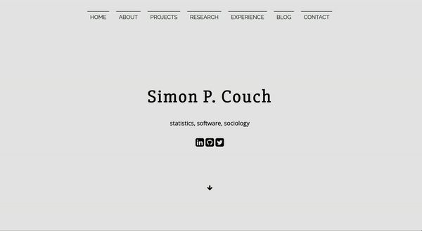

When I was in college, a coworker at one of my jobs did web development gigs on the side. His personal website was a super slick single-page site, built with Flask. I had no idea how it worked, but I really liked it, so I asked if it was okay to fork his repository and took that site on as my own. Editing the site was painful, and I borked it at least hourly whenever I worked on it. It mostly functioned like a high-gloss CV, and didn’t have any sort of blogging component. It looked something like this:
A couple years in, I decided I wanted to give blogging a go. blogdown + Hugo Academic seemed to be the go-to tooling at the time, so I put together a site (with much repo-diving on Silvia Canelón and Julia Silge’s websites). I mostly liked it, though it was also quite bork-prone due to Hugo version management headaches. Because of how much I liked my “main page,” I maintained two separate websites, with totally different styling and deployment setups. The “main page” stayed as-is, and the blogdown site lived on a subdomain and contained no pages other than blog posts. They linked to each other in their navbars, but each was a totally different user experience, and I didn’t know how to maintain either properly.
In the years that followed, many folks gradually migrated to Hugo Apéro. That shit was beautiful. It was so, so easy to make stunning pages with very little knowledge of CSS or web dev. Again, with much repo-diving on Silvia and Julia’s repositories, I made the switch. Transitioning to Hugo Apéro eased the development experience quite a bit, for the most part due to the introduction (or my discovery?) of the blogdown package’s Hugo version management tools and docs. At that point, as well, I also collapsed the “main site” and its blog subdomain into one. Ultimately, though, I found myself still plagued by Hugo authoring woes, spending a lot of time poring over GitHub Issues and StackOverflow posts trying to figure out citation/footnote/linking/math formatting/workflow workarounds.
Over the last few days, again following Silvia’s lead, I’ve remade my personal website with Quarto. Already, I feel that Quarto has both eased the developer and authoring experiences while also keeping the barrier to making beautiful pages low. Much of the unborking I’ve ran into while putting this site together has been a matter of undoing all of the strange workarounds I put together while working on my Hugo sites. As for the appearance, between strong documentation from the Quarto folks, great examples to follow in Silvia and Emil Hvitfeldt’s sites, and heavy use of my browser’s inspector, I feel happy with what I’ve been able to put together. Between the built-in search functionality, quick RSS setup, straightforward introduction of Utterances commenting, and ease of maintenance and deployment, I think I’m sold.🙂
Back to top